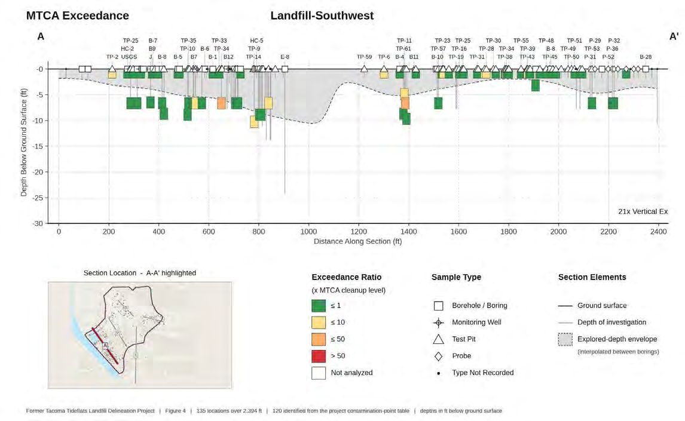
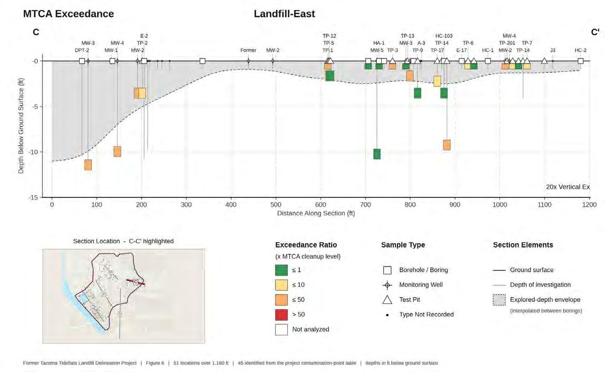
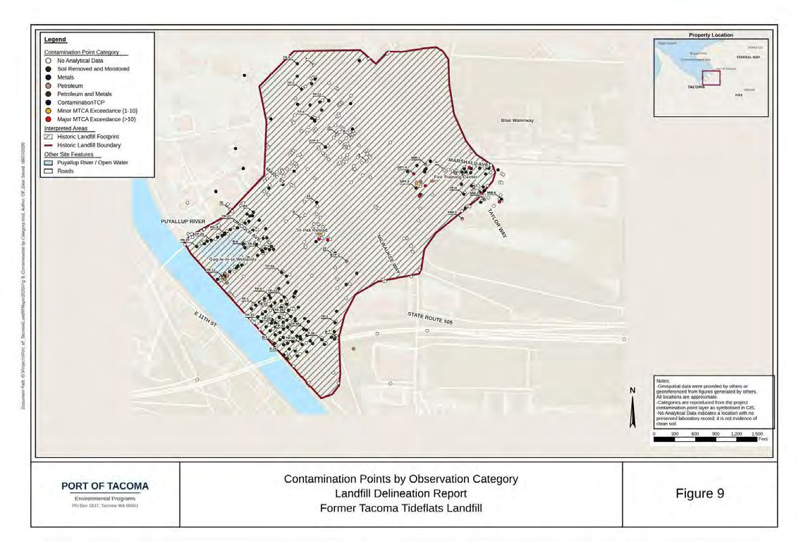
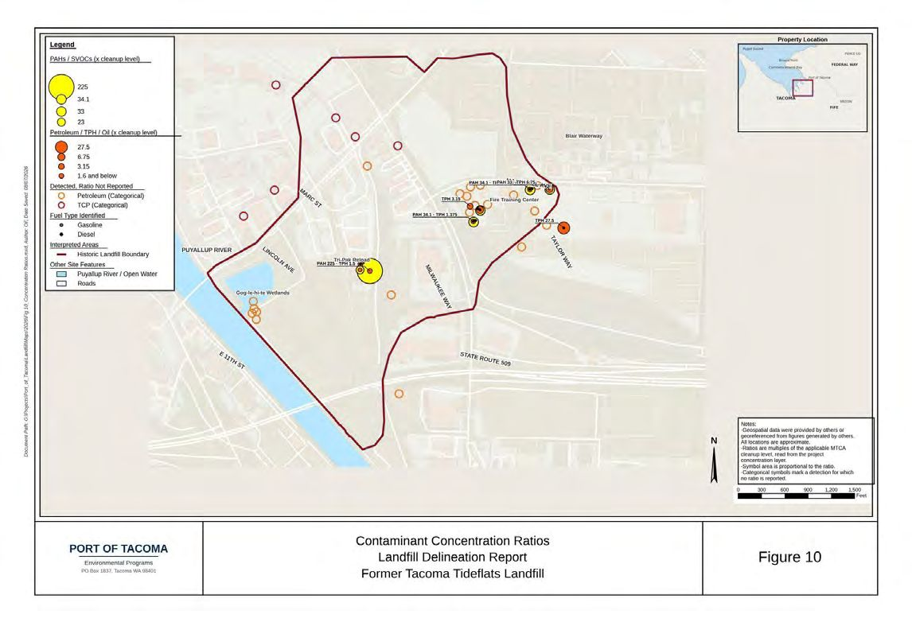

A former landfill sits under more than 200 acres of the Tacoma Tideflats, at the third-busiest port on the West Coast. It operated from the early 1940s to 1964, and two published boundaries disagree on where it ends.
I digitized 800+ field points from 40+ years of reports into one geodatabase, reconciled the boundaries, and screened 100+ exceedances against MTCA and CLARC standards with Python and AI-assisted QA/QC.
Fig. 3Individual work · Cross-section lines A to E and their 280-ft projection corridors
Automated Cross Sections
Each section is measured, not schematic. One script rebuilds all five whenever the record changes.
Section lines: draw A to ECorridor select: points within 280 ftStationing: project onto the lineDepth QA: validate intervalsMap output: XS_A to XS_E

A to A'Lincoln Ave corridor: 135 locations over 2,394 ft

C to C'Fire Training Center reach: the densest run of exceedances
Screening the Record
Many historical borings have no preserved lab results. I mapped them as their own class so a missing result is never read as clean soil, and flagged isolated high results as ground that still needs study.
Peak
225 times the cleanup level
Deepest
74.5 ft investigation
Methane
Monitoring record, 1997 to 2026

Fig. 9Investigation points in nine observation categories

Fig. 10PAH and petroleum results as multiples of MTCA cleanup levels
Findings and Next Steps
Findings
The reconciled footprint covers 200+ acres and 10 Port parcels. Much of the historical record has no lab results: a gap in the data, not evidence of clean soil.
Results
559 mapped locations. Exceedances cluster in the Fire Training Center reach and along Lincoln Ave; one PAH result reached 225 times. Soil holds the most exceedances, then groundwater.
Next
Check conclusions against the Taylor Way and Alexander Avenue Fill Area study, refine the boundary as new borings arrive, and support a shift to annual methane monitoring.